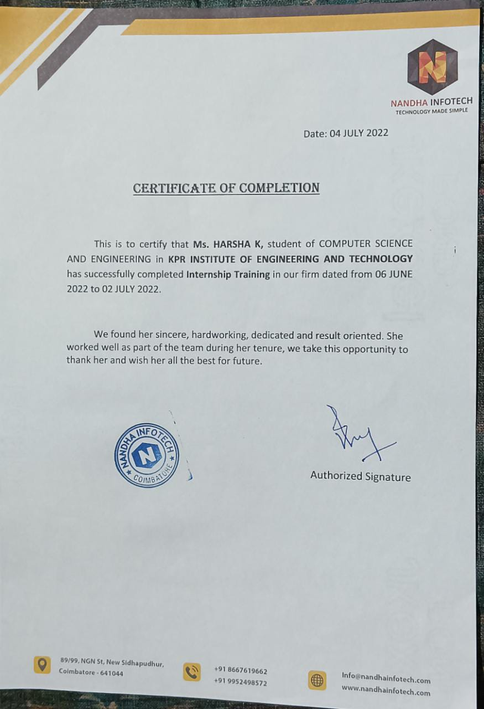
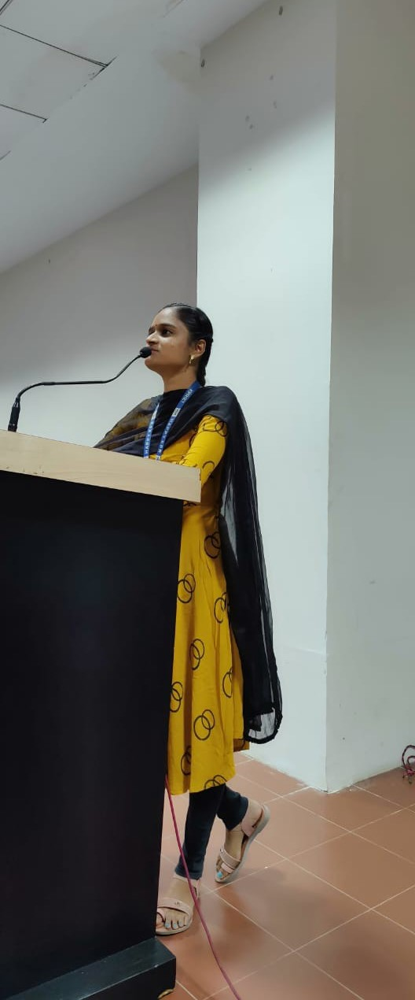

Call me @+91 9894467199
Email@ harshaguna1703@gmail.com RESUME
OBJECTIVE
As a web developer, my objective is to create user-friendly and efficient websites that are visually appealing and easy to navigate.
I utilize my skills in HTML, CSS, JavaScript, and PHP to develop websites that meet all the requirements of the client. I am also comfortable working
with different content management systems (CMS) such as WordPress. With my Full Stack Developer course expertise, I am confident
that I can apply these skills to a Web Developer Role, and would like the opportunity to work with more complex codebases. In addition to development,
I also offer maintenance and support services to keep the website running smoothly. My ultimate goal is to provide clients with a high-quality product
that meets their expectations and needs.
PROJECTS
HEALTH MONITORING SYSTEM
This project is fully based on monitoring system in the domain of IOT(Internet of Things). This kit is to monitor a person's heartbeat and body temperature without of any harware touching by the humans. If any one of person came inside the room the developed kit will automatically deduct the range of heartbeat and the body temperature through the sensors the sensors will send the input to the board used here the board will transmit the inputs to cloud here the cloud is used for storing purpose.
SMART HOUSE
This paper proposes the design of Inter of Things (IoT) based home automation system using Raspberry pi. Currently in day today`s life we can hardly find a house without a home automation system. This project is intended to construct a home automation system that uses any mobile device to control the home appliances. This home automation system is based on IoT. Home automation is very exciting field when it uses new technologies like Internet of Things (IoT). Raspberry pi is credit card size computer. Raspberry pi supports large number of peripherals. Raspberry pi is having different communication media like Ethernet port, HDMI port, USB port, Display Serial Interface, Camera Serial Interface, Bluetooth, Bluetooth low energy. It allows controlling number of home appliances simultaneously. Here local server is created on Raspberry pi. User required to use different mobile devices like smart phones, Laptops, Tablets to operate the home appliances with the help of UI created on web page.
WOMEN INCENS
In our domestic and all the womens round us in the globe all are going through the peroids cycle in our lifestyles so that now a days we are using the napkins however in oldern days the waste cloths are used in that time which is very horrific for their fitness so that only the napkins are introduced the cottons are accumulated collectively to made the napkins . The largest hassle in the serviette is it takes common of 50 years to get biodegrad because it was made by using some sorts of plastics. To overcome that hassle we are developed a product called female incens this will assist to biodegrad the napkins. This is definitely a hardware product improvement in the domain of IOT(Internet of Things) and the product is incenerator for the product the use of with the aid of womens. This is a modern thought of our group so the product and the plan patent used to be registered and that are published.
NEWS API
In this project report, we propose a new web-based service that combines the innovative Alan Studio, News API, and React. The proposed idea is a voicecontrolled web application that provides a simple and easy-to-use approach for users to search for news using voice and speech. The application provides the necessary components for users to access news content in a concise or detailed manner. By embedding a voice-controlled system in a web application, we can enhance the user experience and provide voice as a means to control the functionality of e-commerce websites. The system also allows users to search for news based on location, source, theme, and interest. The user interface is dynamic, informative, and user-friendly, providing an exciting way for users to stay informed and updated. With this innovative technology, we aim to reduce the amount of human effort required by the user and offer a more engaging way of getting informed.
INTERNSHIP
NANDHAINFO TECH
I was completed a four weeks of intern at Nandhainfotech in the time of my Bachulors degree. It was in the domain of Web Development. I was Developed a platform using WordPress for the entrepreneurs in the Tamilnadu, the interviews are taken by Nandhainfotech from them and that will be uploaded in that platform called Theekural. The main objective for that platform is the peoples should explore their ideas with a better awareness from the entrepreneurs, they will give the motivational speaches in the interviews so the peoples can be motivated for their ideas in the good way. this was the moto for that platform.
 
INTERN PROJECT
THEE KURAL
In my intern period I developed one platform called TheeKural which is live in the browser now, with the help of WordPress I have done this in the domain of web designing.
LOCATION
HARSHA KATHIRAVAN,
22,ARULJOTHI PURAM,
ONDIPUDUR,
COIMBATORE-641014.
TAMIL NADU,
INDIA.